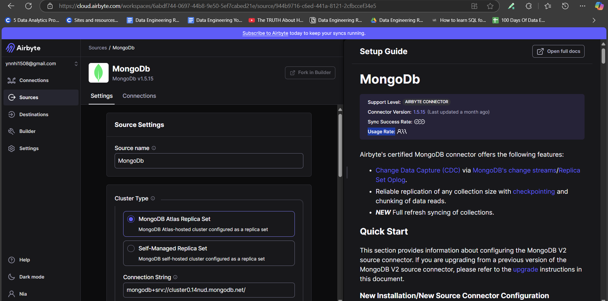
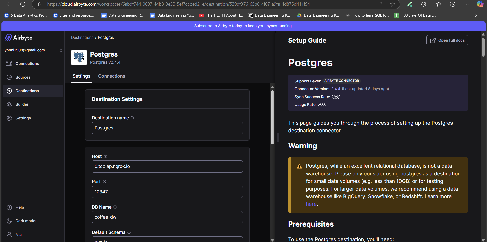
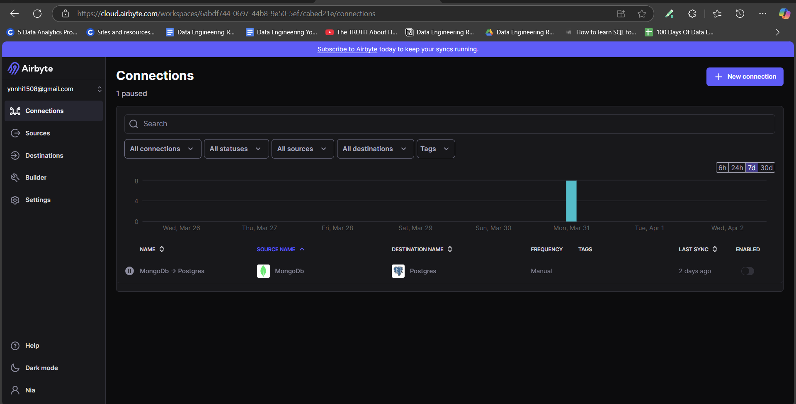
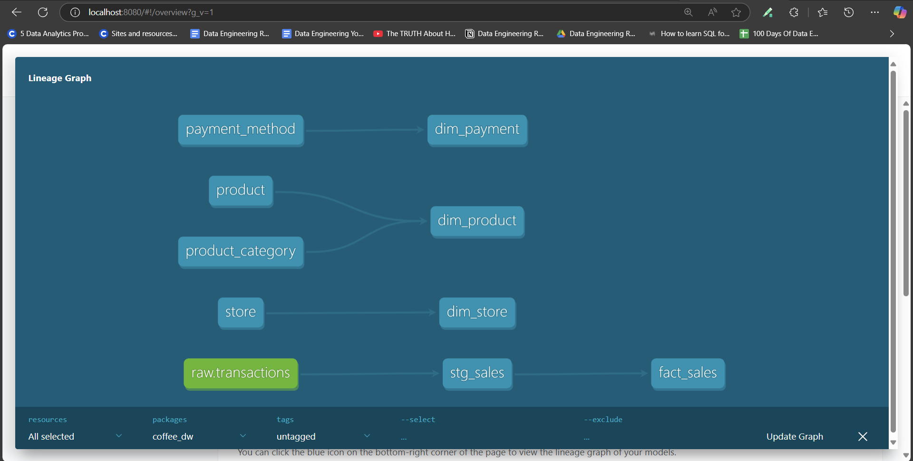

⏳ Batch Pipeline
1. Setup Airbyte connection
You can create an Airbyte account using the link in the Prerequisites section.
Once you’ve created your account, you can set up connections between the source and destination databases (in this case, MongoDB and PostgreSQL). Each database setup has a tutorial alongside the configuration, so you don’t need to worry about that.



2. DBT Setup
We mount all the things related to DBT container in folder dbt_project/. We have our only DBT project coffee_dw.
Here is a brief overview of the necessary configuration files required to run DBT:
profile.yml- This file is used to define the connection configurations for DBT to connect to your database (like PostgreSQL, Snowflake, etc.). It contains important information such as the database credentials, host, schema, and other connection settings.
- Visit this link for more details.
coffee_dw: target: postgres outputs: postgres: type: postgres host: host.docker.internal user: postgres password: "{{ env_var('POSTGRES_PASSWORD') }}" port: 5432 dbname: coffee_dw schema: dbo threads: 8
dbt_project.yml- This file is the main configuration file for your DBT project. It defines the project name, version, models, and other settings that guide the execution of DBT commands.
- Visit this link for more details.
-
seeds\- The
seeds/folder contains CSV files that can be loaded into the database as tables. These are static data sets that you can use for reference data, small lookup tables, or small sample datasets that don’t change frequently. - In addition to the
CSV file, you can create a correspondingYAML fileto configure column types, default values, and other settings for the table being created from the CSV file. - Visit this link for more informations about properties or commands.
id,name,modified_date 1,Coffee,2025-03-17 13:08:30 2,Tea,2025-03-17 13:08:30 3,Yogurt,2025-03-17 13:08:30 4,Juice,2025-03-17 13:08:30 5,Cake,2025-03-17 13:08:30version: 2 seeds: - name: product_category config: schema: raw column_types: id: integer name: varchar modified_date: timestamp
- The
-
models\- The
models/folder is where you define your DBT models, which are SQL files that define transformations in your data warehouse. These models are run when you execute thedbt runcommand and typically produce tables or views in your data warehouse. - Visit this link for more informations about SQL models.
- The
3. Run the Batch Pipeline
Execution Overview 🎬
Before running, here’s a quick demo of the batch pipeline in action:
📽️
DBT models

Staging
source_transactions.ymldefines the data source from thetransactionstable in the public schema of the database, which serves as theraw datasource for our pipeline.version: 2 sources: - name: raw schema: public tables: - name: transactions description: "Coffee sales table" columns: - name: _id tests: - not_null - unique
-
raw datalooks like this:{ "_id": "67da8f08fbbecd9533bcd1e3", "timestamp": "2025-03-19T16:31:52.161709", "store_id": 4, "total_amount": 150000, "payment_method": 2, "currency": "VND", "items": [ { "product_id": "C05", "name": "Matcha Cheesecake", "category": "Cake", "quantity": 3, "subtotal": 150000 } ] } -
stg_sales.sqlcleans and transforms the raw data from transactions into astaging table, which will be further processed in the next steps. materialized='incremental': This ensures that onlynew data is updatedrather than rebuilding the entire table. Visit dbt incremental models for more details.- The
itemsfield is anarrayin the document. To extract each item as a separate row in PostgreSQL, we use thejsonb_array_elementsfunction. This allows us to break down the array into individual product details, making it easier to query and process each item separately in the transaction.{{ config( materialized='incremental', unique_key='sales_id' ) }} WITH stg_sales AS ( SELECT _id AS sales_id, timestamp, store_id, payment_method, jsonb_array_elements(items) AS item FROM {{ source('raw', 'transactions') }} {% if is_incremental() %} WHERE timestamp > (SELECT MAX(timestamp) FROM {{ this }}) {% endif %} ) SELECT stg_sales.sales_id, stg_sales.timestamp, stg_sales.store_id::INTEGER, stg_sales.payment_method::INTEGER AS payment_method_id, (item->>'product_id') AS product_id, (item->>'quantity')::INTEGER AS quantity, (item->>'subtotal')::INTEGER AS subtotal FROM stg_sales
Marts
- In the
dimensions/folder, you will have models likedim_product,dim_store, anddim_payment. These models representdimension tablesin the Data Warehouse, storing descriptiveattributesof key entities like products, stores, and payment methods. These tables are used to enrich the data for analysis, providing context to the events stored in the fact tables. - In the
fact/folder, you will have models likefact_sales, contains transactional data such as sales, quantity, timestamp, and revenue, which are linked to the corresponding dimensions (product, store, payment method). The sales_key is a unique identifier for each transaction, generated using a combination of surrogate keys for the product, store, and payment method.{{ config( materialized='incremental', unique_key='sales_key' ) }} WITH stg_sales AS ( SELECT * FROM {{ ref('stg_sales') }} {% if is_incremental() %} WHERE timestamp > (SELECT MAX(timestamp) FROM {{ this }}) {% endif %} ) SELECT MOD(ABS(CAST('x' || LEFT(MD5(CONCAT(stg_sales.sales_id, stg_sales.product_id)), 15) AS BIT(64))::BIGINT), 10000000000) AS sales_key, {{ dbt_utils.generate_surrogate_key(['stg_sales.store_id']) }} AS store_key, {{ dbt_utils.generate_surrogate_key(['stg_sales.product_id']) }} AS product_key, {{ dbt_utils.generate_surrogate_key(['stg_sales.payment_method_id']) }} AS payment_method_key, stg_sales.sales_id, stg_sales.timestamp, stg_sales.quantity, stg_sales.subtotal AS revenue FROM stg_sales
All YAML files in the models directory are used for data quality checks and to define relationships between different models. These files help ensure that the data meets the expected standards and integrity constraints, such as non-null values, uniqueness, and correct data types, while also establishing relationships between tables for accurate data modeling.
version: 2
models:
- name: fact_sales
columns:
- name: sales_key
description: The surrogate key of the sale
tests:
- not_null
- unique
- name: store_key
description: The foreign key of the store
tests:
- not_null
- relationships:
to: ref('dim_store')
field: store_key
- name: product_key
description: The foreign key of the product
tests:
- not_null
- relationships:
to: ref('dim_product')
field: product_key
- name: payment_method_key
description: The foreign key of the payment method
tests:
- not_null
- relationships:
to: ref('dim_payment')
field: payment_method_key
- name: sales_id
description: The natural key of the sale
tests:
- not_null
- name: timestamp
description: The timestamp of the sale
- name: quantity
description: The quantity of the product
tests:
- not_null
- name: revenue
description: The revenue obtained by multiplying the price and quantity
tests:
- not_null